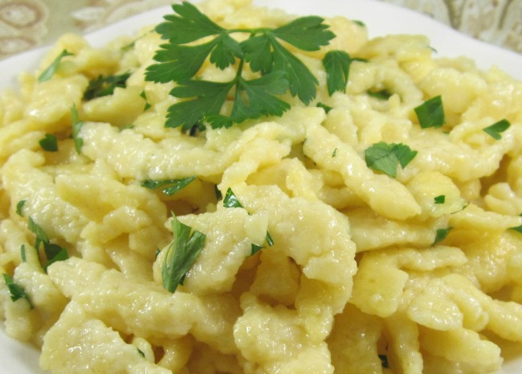

Spaetzle Recipe

A versatile Germanic dish.
Made in the Germanic speaking regions of central Europe, these noodles are great as a side dish with Schnitzel, they can have meats and cheeses added. Spaetzle can be adapted by the consumer in a plethora of ways.
Ingredients:
Steps:
Mix 2 cups flour and 1.5 tsp salt.
In seperate bowl, whisk four large eggs.
Make well in center of flour and pour in eggs.
Add a half cup milk. Stir together dough until bubbles appear.
Bring two quarts salted water to boil. Using spaetzle maker press noddles into simmering water. Boil until noodles float.
Drain noodles, butter and season.